清爽软萌 / 可爱的控件 / 柔和材质 / 有细节的背景。点图放大，直接选编号。
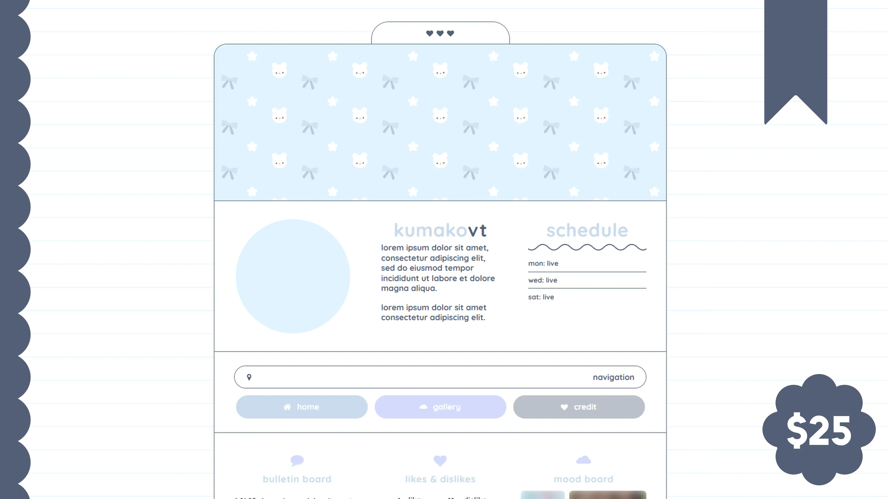
蓝白软萌 · 分区面板
细线边框、胶囊按钮、柔和分区
蓝白小窗 · 圆润控件
圆角窗口、小按钮、蓝白配色
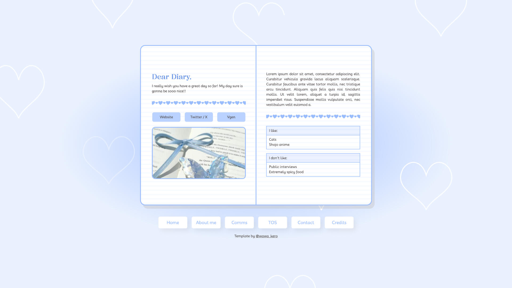
蓝色手账 · 纸张层次
手账面板、浅色底纹、轻边框
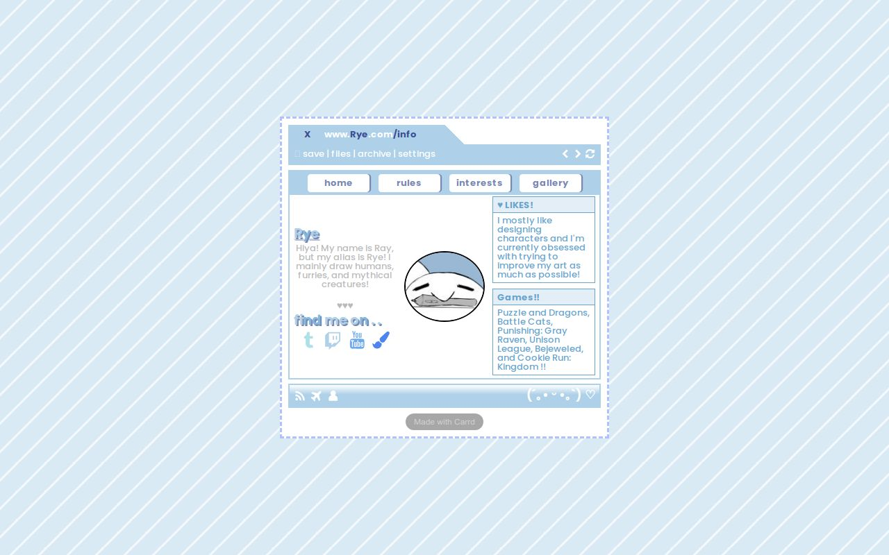
蓝白桌面 · 网格背景
细网格、窗口层次、紧凑小元素
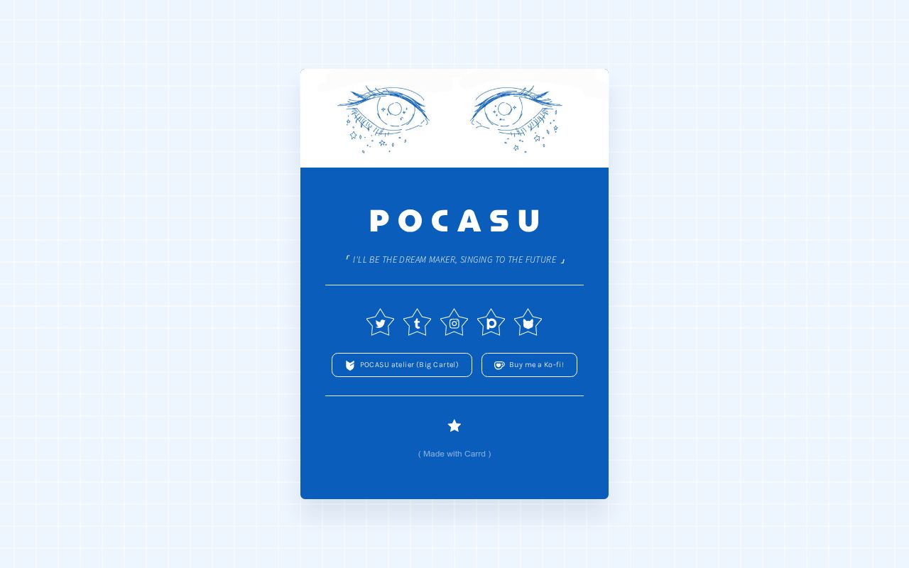
雾蓝卡片 · 清晰细节
网格底、圆形图标、细边按钮
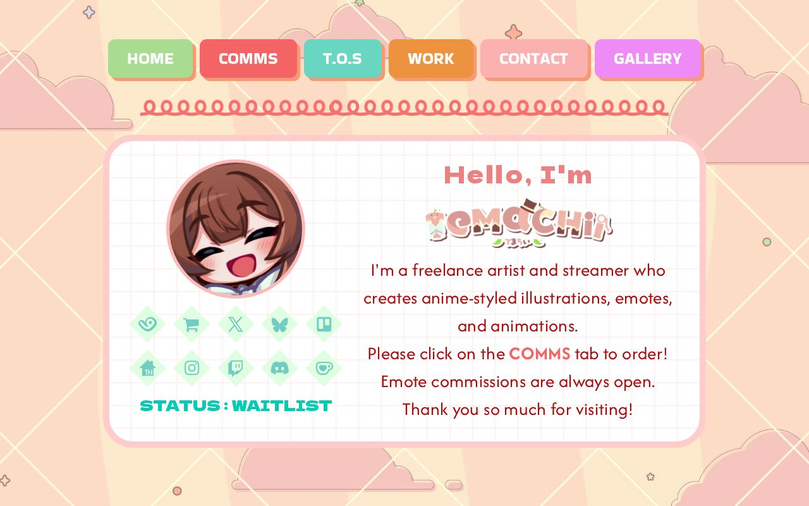
奶油手账 · 贴纸装饰
奶油色、装订边、柔和小标签
莓粉窗口 · 可爱边框
条纹与格纹、小窗、装饰边缘
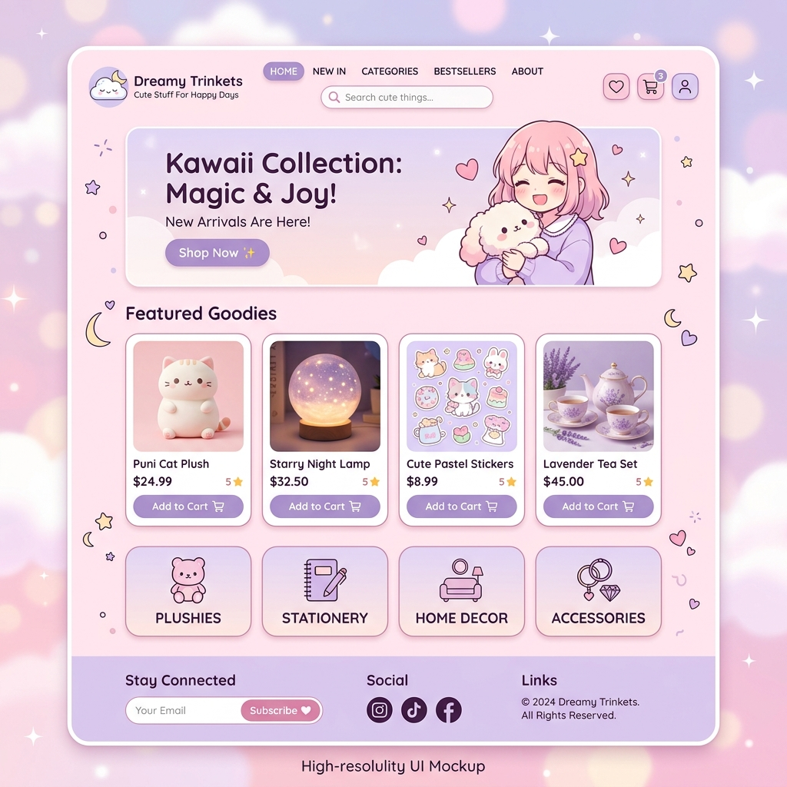
淡粉软萌 · 圆润组件
软色面板、圆角标签、细节层次
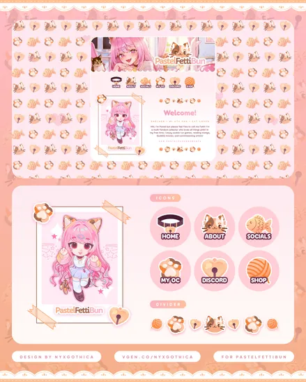
奶橘小窗 · 层叠控件
小按钮、窗口分层、轻糖果色
浅彩卡片 · 轻装饰
卡片轮廓、浅彩标签、细小点缀
晴蓝花朵 · 轻立体背景
花形几何、浅蓝底、柔软立体细节
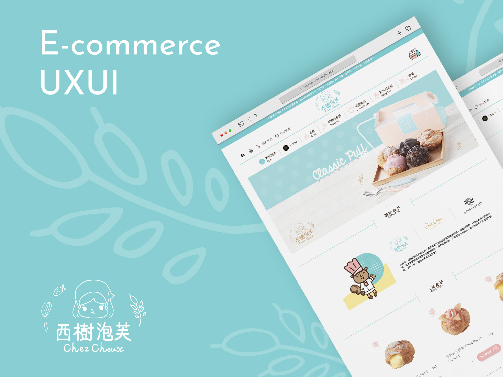
薄荷纸纹 · 手绘轮廓
薄荷底、手绘线条、圆润元素
柔和桌面 · 模块布局
奶粉与薄荷、圆角模块、轻卡通细节
蓝紫星点 · 透明窗口
渐变背景、星点、半透明小窗
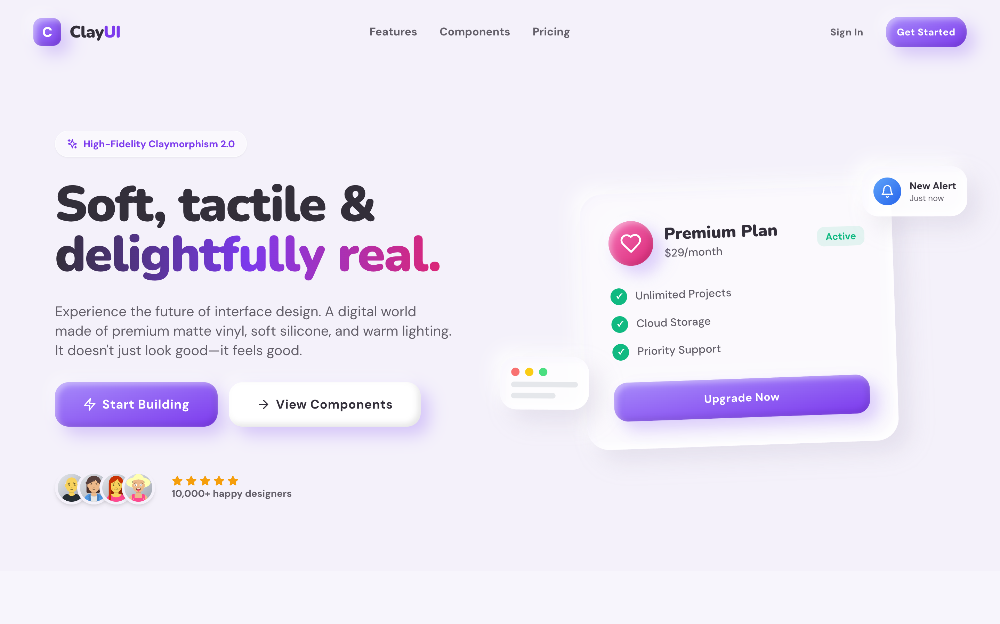
浅紫软胶 · 按钮材质
柔软阴影、圆润按钮、小标签
柔雾玻璃 · 浮层面板
磨砂感、薄边、浅紫层次
浅蓝渐层 · 基础元素
按钮、输入框、卡片的统一感觉
软糖按钮 · 圆润控件
软材质、小按钮、开关与滑条
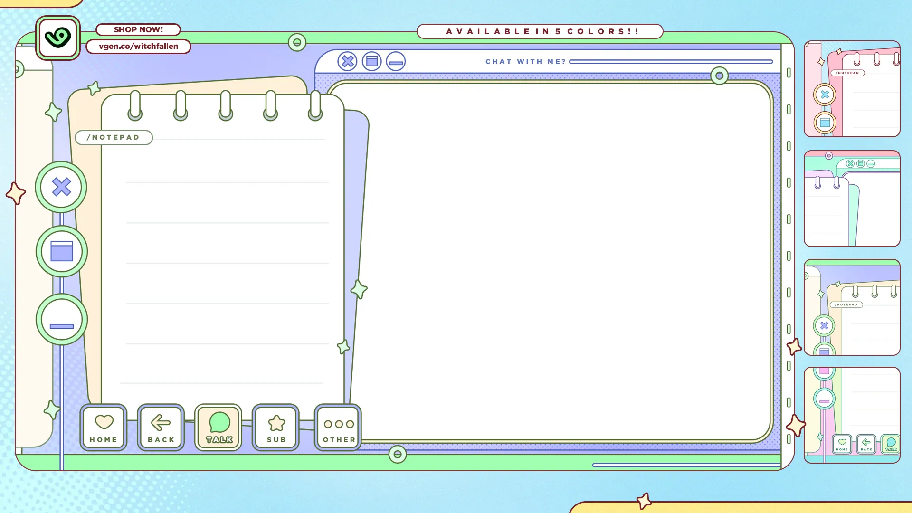
薄荷小窗 · 装订边框
窗口边缘、侧栏小钮、纸张层次
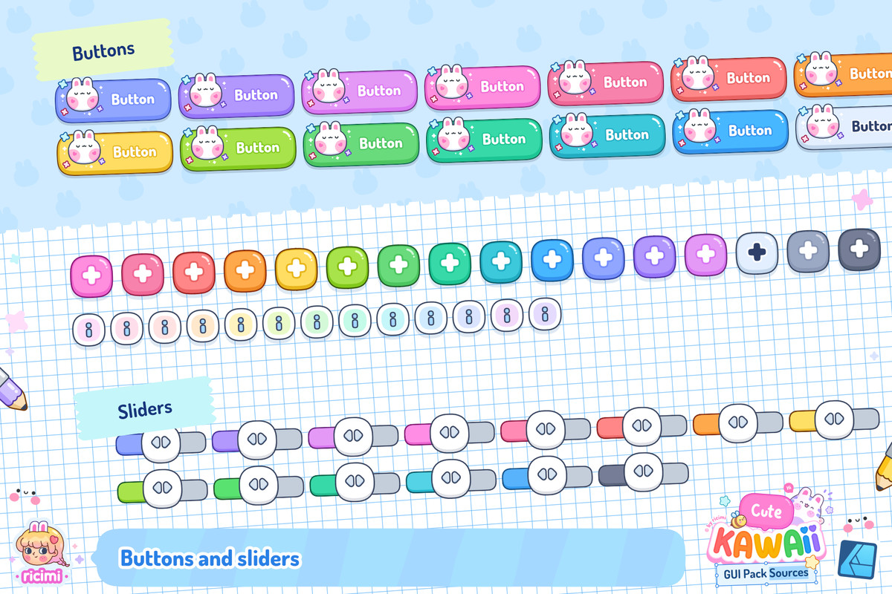
软萌按钮 · 微型控件
小圆钮、胶囊按钮、糖果色轮廓